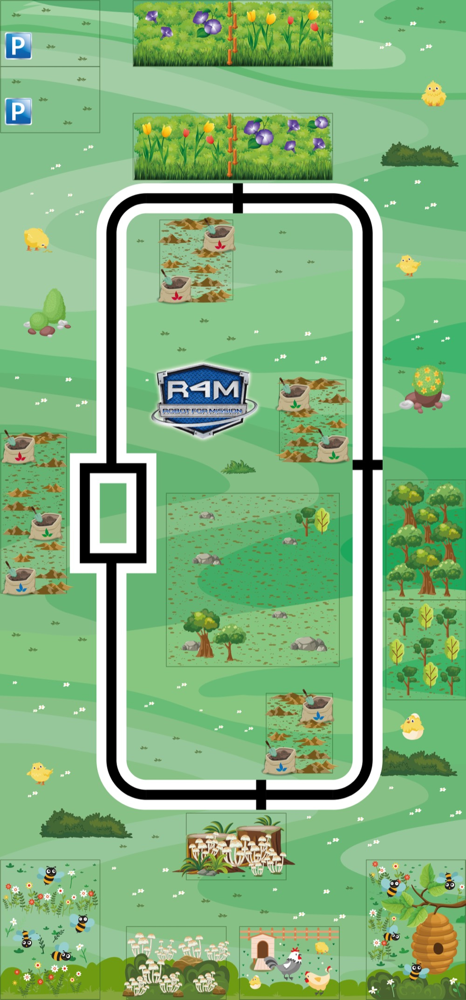

C ROBOT · LINE FOLLOWING · AUTONOMOUS
C 車 循跡取料
C 車在比賽中不能遙控。按下 B 之後，它會自己沿黑線把飼料送到對應顏色的放置區。
一、任務與計分
C 車必須裝循跡感應器（1247-W85-B3 或 1409-W85-D），用程式自主運作，把紅、綠、藍三種飼料從「飼料暫放區」沿黑線運到對應顏色的放置區。飼料的正投影要在框線或圖案內才算分，不可以用手把飼料放到車上啟動。
| 飼料 | 數量 | 每個 | 小計 |
|---|---|---|---|
| 紅色 → 紅色放置區 | 16 | 15 分 | 240 分 |
| 綠色 → 綠色放置區 | 10 | 20 分 | 200 分 |
| 藍色 → 藍色放置區 | 6 | 10 分 | 60 分 |
| 放錯顏色區 | — | 5 分 | — |
| 三色全部送對 | — | — | 加 100 分，滿分 600 |
運送途中失敗或沒進得分區，可以把沒得分的飼料拿回暫放區，再讓 C 車重跑。程式可以在比賽中修改、重新上傳，但時間照算。
二、場地與路線

中央的黑色環線就是 C 車的路。左側島形框是 C 車出發區，飼料暫放區在它的左邊（西邊）。環線上有三條橫線，分別在三個放置區旁邊：
- 上方橫線：紅色放置區
- 右側橫線：綠色放置區
- 下方橫線：藍色放置區
程式跑兩趟：
- 第一趟（紅色）：在出發區取料 → 往北順時針走 → 停在上方橫線 → 右轉進紅色放置區卸料 → 原地迴轉，循線回到出發區。
- 第二趟（藍＋綠）：再取料 → 往南逆時針走 → 停在下方橫線卸藍色 → 繼續走到右側橫線卸綠色 → 完成，畫面顯示 ✓。
先送紅色，是因為紅色總分最高（240 分）。
三、按鍵與畫面
| 操作 | 作用 |
|---|---|
| 按 B | 開始任務（車子要先放在出發區、車頭朝北） |
| 按 A | 急停：馬上停車、閘門關上，畫面顯示 ✗ |
| 搖一搖車子 | 感測器檢查模式（15 秒）：畫面左、中、右三格會跟著三顆感測器亮，壓到黑線就亮 |
| 畫面 | 意思 |
|---|---|
| 笑臉 | 開機完成，等你按 B |
1 / 2 / 3 | 目前進度：1＝第一趟、2＝紅色卸完、3＝回到出發區準備第二趟 |
| ✓ | 任務完成 |
T | 逾時：一段路走了 20 秒還沒看到橫線，車子已停 |
L | 找不到線（Lost），車子已停 |
| ✗ | 按了 A 急停 |
四、參數在哪裡改
所有要在場地上實測的數字都放在程式最上面的參數區。改完重新下載燒錄即可。
腳位與方向
| 參數 | 預設 | 說明 |
|---|---|---|
PIN_S_L / PIN_S_C / PIN_S_R | P8 / P12 / P2 | 左、中、右循跡感應器的腳位，依主控盒實際接線修改 |
有中央感測器 | true | 只裝兩顆感應器時改成 false（建議裝三顆，才偵測得到完全脫線） |
黑 | 1 | 壓到黑線時讀到的值；搖一搖檢查時亮暗相反，就改成 0 |
L_正轉 / R_正轉 | 1 / 1 | 某一輪往後轉就把那一輪改成 0 |
PIN_GATE | P1 | 料斗閘門伺服馬達的腳位 |
速度
| 參數 | 預設 | 說明 |
|---|---|---|
V_直行 | 380 | 循跡時的基礎速度（0～1023） |
V_慢 | 260 | 取料、進區、找線的慢速；所有「走幾公分」都用這個速度 |
V_轉外 / V_轉內 | 520 / −160 | 偏離黑線時外側輪、內側輪的速度（內側負值＝倒轉，修正得更急） |
V_原地 | 330 | 原地旋轉的速度 |
里程與轉角校正（最重要）
C 車沒有編碼器，「走幾公分」「轉幾度」都是用時間換算的。換電池、換輪子、換場地後都要重新量。
| 參數 | 預設 | 怎麼量 |
|---|---|---|
MS_每公分 | 38 | 讓車以 V_慢 直行 3000 毫秒，量走了幾公分 D，MS_每公分 = 3000 ÷ D |
MS_每度 | 7 | 讓車以 V_原地 原地轉 2000 毫秒，看轉了幾度 A，MS_每度 = 2000 ÷ A |
取料與卸料
| 參數 | 預設 | 說明 |
|---|---|---|
取料前進 / 取料後退 | 14 / 15 cm | 車頭轉向西後往前衝多少把飼料收進料斗、再退多少回到出發區 |
紅_微調 / 綠_微調 / 藍_微調 | 0 | 停在橫線後先前進（＋）或後退（−）幾公分再轉彎，用來對準各放置區的中心 |
進區距離 | 6 cm | 轉向放置區後再前進多少 |
退出距離 | 22 cm | 卸完往後退多少。前方開口的推箱式料斗要大於料斗深度，飼料才留得在區內 |
閘_關 / 閘_紅 / 閘_綠 / 閘_藍 | 2400 / 1800 / 1400 / 1000 | 閘門伺服的脈衝寬度（微秒），依料斗實際結構實測 |
逾時_毫秒 | 20000 | 一段路超過這個時間還沒看到橫線就停車，顯示 T |
微調值怎麼算：車子停在橫線上時，料斗中心在「橫線後方、感測器到料斗中心的距離」那裡。
微調值 ＝ 想讓料斗中心停的位置 − 橫線位置 ＋ 感測器到料斗的距離（先量自己的車：循跡感測器到料斗中心的前後距離）。
微調值 ＝ 想讓料斗中心停的位置 − 橫線位置 ＋ 感測器到料斗的距離（先量自己的車：循跡感測器到料斗中心的前後距離）。
五、第一次上場地的調整順序
- 搖一搖檢查感測器：三顆都要能分辨黑線和白底。亮暗相反就改
黑。 - 輪子架空按 B：兩輪都要往前轉，反了改
L_正轉 / R_正轉。 - 量
MS_每公分和MS_每度，填回程式。 - 只跑第一趟：看取料是否收得到飼料、紅色區卸得準不準，調
取料前進、紅_微調、進區距離。 - 跑完整任務：再調藍、綠的微調值與閘門角度。
- 每次改了什麼、改成多少，記在紙上；比賽現場改程式時間照算，準備好的數字可以直接填。
硬體限制：micro:bit V1 同時只能輸出 3 路 PWM，兩顆馬達加一顆閘門伺服剛好用滿；要加第二顆伺服請改用 V2 並實測。比賽規定 C 車主控盒須用 1269-W85-A1 或 1409-W85-A。